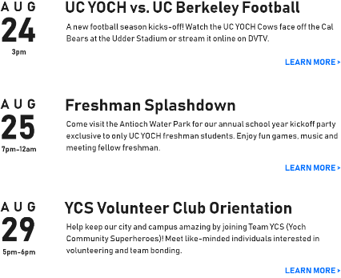
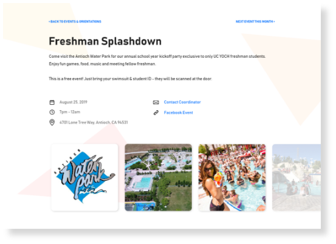
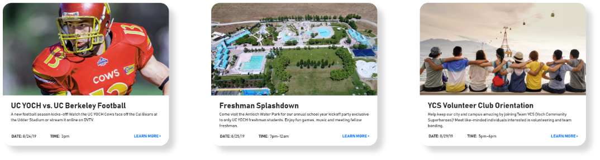

DESIGN CHOICES
Decoding the Design
Being a student myself helped me a lot with getting into the mindset of someone who would use this web page: a new student looking for events and orientations. This gave me a strong understanding of how I can make navigation as intuitive as possible and I included details a student would want.
Look & feel
My idea of this made-up college is that it would be a newer, 'hip' college so I only used san serif fonts, bright yellow-orange-red colors, and fun shapes but I still aimed to maintain somewhat of a professional look being that this would be a UC school.
Fixed filter box
The shape and size of the event cards worked around the image being in 16:9 ratio. Without making the cards feel too big, the page had a significant amount of space to the left. I thought it would be valuable to have the filtering box stay fixed as the user scrolled down the page to effectively use the space.

Design system repeatability
Numerous events means many repeated elements. I made my design system as consistent as possible so the elements would uniformly work together. Shared and similar design elements such as font sizes, font weights, colors, spacing, etc. are used to make up bigger elements such as the list view, card view, and event pages. It also makes for a simple development stage, should this design be turned into a real website.


